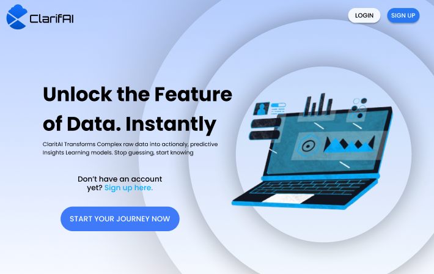
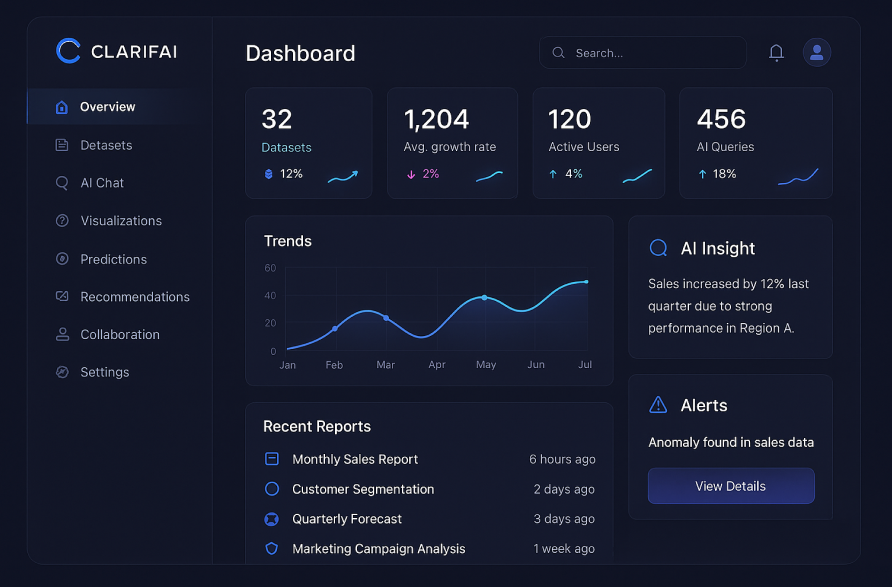

1. Prepare data
Upload datasets, review processing status, and confirm that information is ready for analysis.
Featured Client-Based Project
An AI-powered data insights and decision-support platform designed to transform raw datasets into understandable answers, visualizations, forecasts, and actionable recommendations.

Kyro Core I.T. Solutions is a technology and security service provider in Dagupan City offering CCTV services, web development and maintenance, SEO, and graphic design and printing. Its work involves sensitive client information, recordings, and web applications.
Organizations often collect useful datasets but lack accessible tools for interpreting them. ClarifAI reduces the technical barrier by allowing users to explore data through natural language and automatically generated visual explanations.
The landing experience introduces ClarifAI's value clearly, while the analytics dashboard prioritizes datasets, trends, AI insights, alerts, and reports.

The interface organizes the analytical workflow into three understandable stages: bring data into the platform, explore it through AI and visualizations, then share the resulting evidence with decision-makers.
Upload datasets, review processing status, and confirm that information is ready for analysis.
Ask questions naturally, inspect automated visualizations, and examine trends and forecasts.
Share dashboards, AI reports, recommendations, and annotations with collaborators.
Because the client handles sensitive operational and customer information, the project also considers access control, secure data handling, backups, recovery, risk reduction, and responsible management of AI-generated output.
ClarifAI is designed to shorten the path from raw information to confident action, make analytics accessible to non-technical users, strengthen collaboration, and support more consistent evidence-based decisions.
The platform combines technically complex features without overwhelming users. I used progressive disclosure, familiar dashboard patterns, and plain-language interaction to keep advanced analytics understandable.
This project strengthened my experience working from a real organization’s context, designing data-heavy interfaces, communicating AI capabilities responsibly, and balancing usability with information-assurance requirements.
I can walk through the client requirements, user flows, interface decisions, and front-end contribution during an interview.